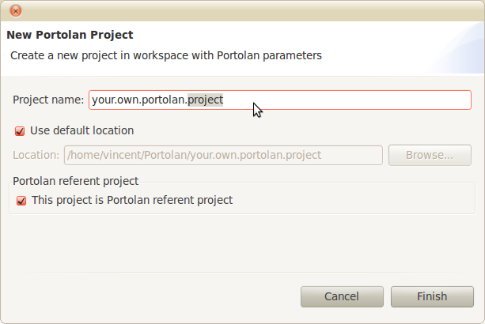
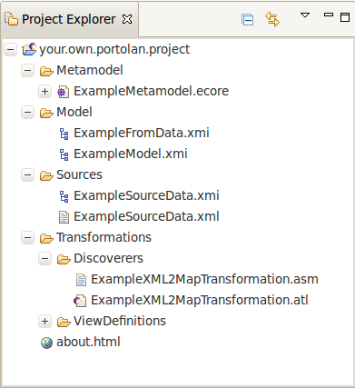

Go in Portolan File menu, and then select New..., click on New Portolan Project. You only have to set the name of your project, and Portolan will take care about all other things.

The Portolan referent project check-box means that your project will be the new project considered by Portolan visualization tools and also feed the View bar on the left.
The resulting project contains pre-defined data which can help you understand how Portolan works:
